Andrew Brady
Andrew Brady
Journalism & content
Cars

I’ve been writing about cars since 2013 – reviews, news, buying advice, features and everything in between. I’ve driven hundreds of them, from ordinary hatchbacks to seriously expensive performance cars, and spent years answering the questions people actually ask when they’re about to spend their money.
My favourite work is that which genuinely helps car buyers. Should you buy an EV? Will that car fit your garage? Is the expensive version actually worth it? Sometimes the answer is a Ferrari. More often, it’s a Honda Jazz.
For the last couple of years I’ve also seen the industry from the other side of the keyboard, writing customer-facing digital content at Jaguar Land Rover.
Experience
Portfolio
City A.M.
Ferrari Portofino review: The replacement for the California T is a special and surprisingly easy drive
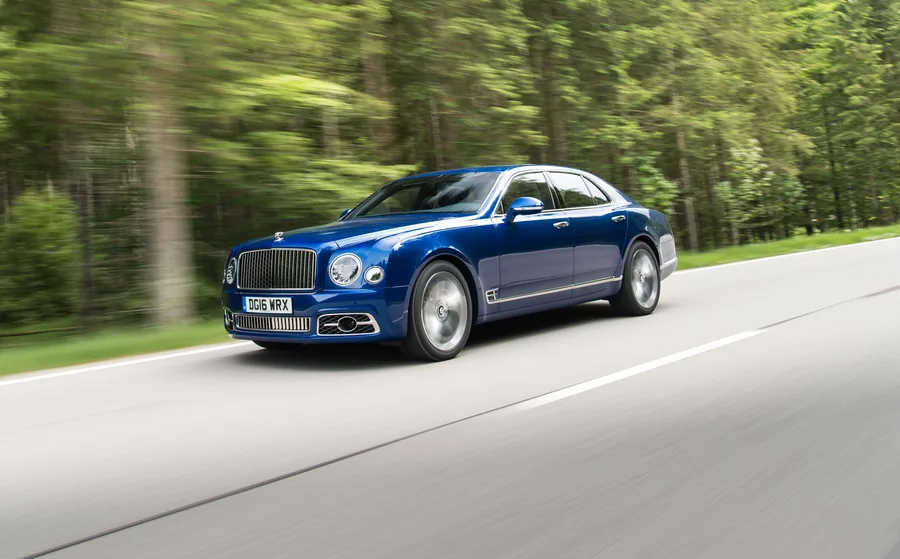
City A.M.
Bentley Mulsanne Speed review: This rolling fortress is like a luxury flat on wheels
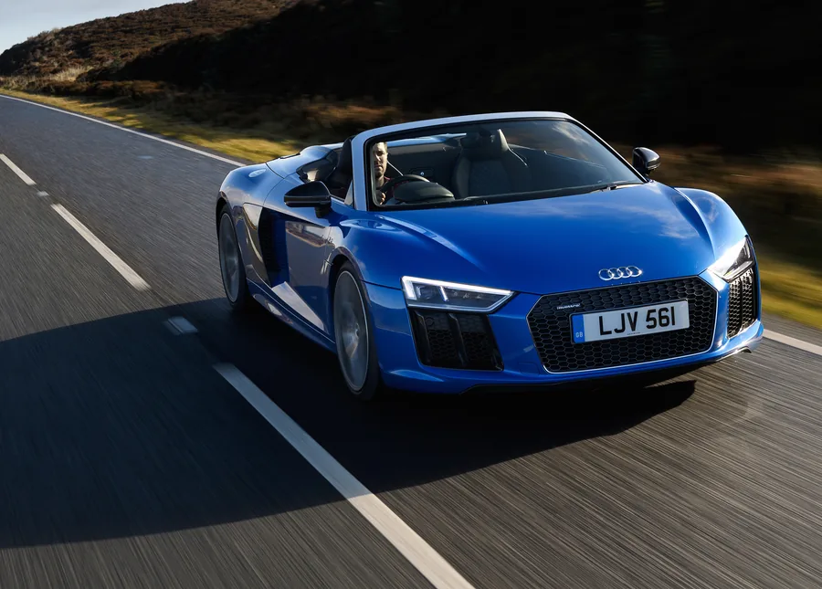
City A.M.
Audi R8 Spyder review: The soft-top supercar threatening Lamborghini’s supremacy
City A.M.
Tesla Model X SUV review: Elon Musk takes a break from Mars mission to make a killer self-driving car
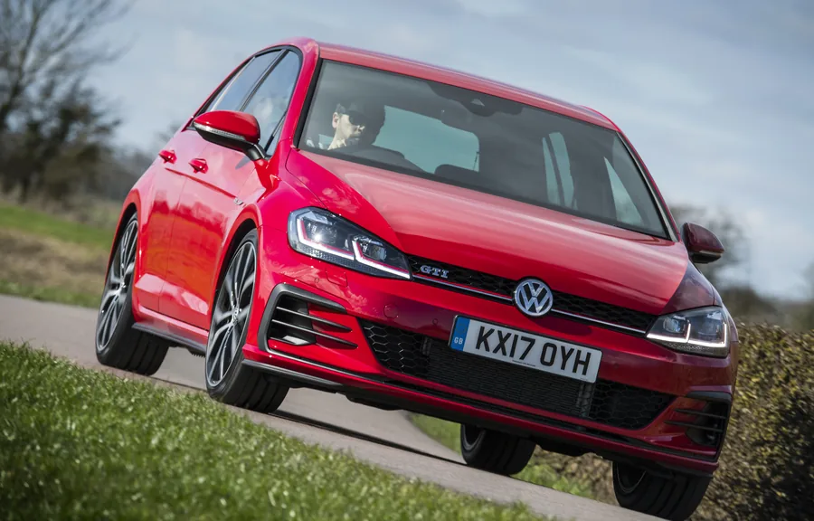
City A.M.
Golf GTI 2017 review: The grand daddy of hot hatches is back, baby
Motoring Research
Track test: which is the best Mercedes-AMG GT?
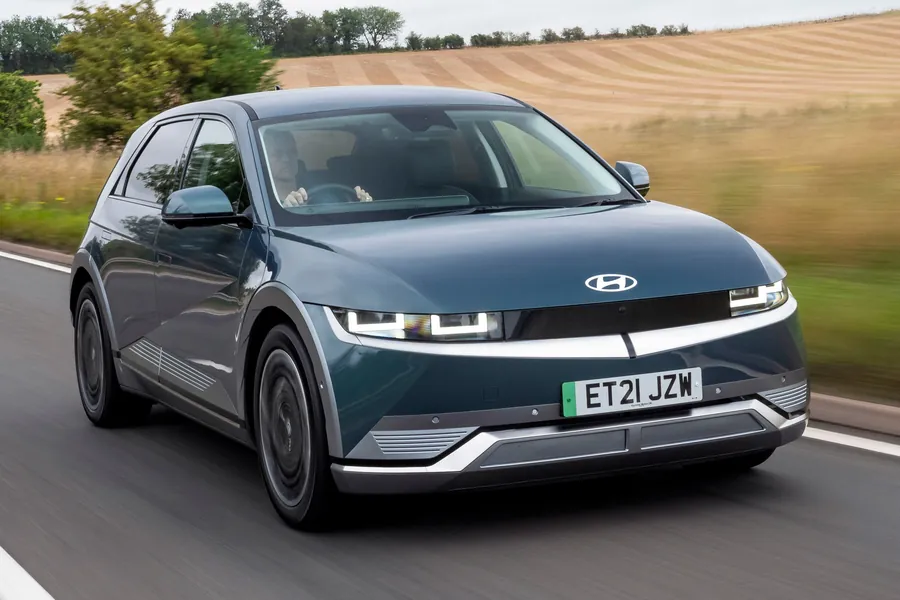
Drive
Hyundai Ioniq 5 review
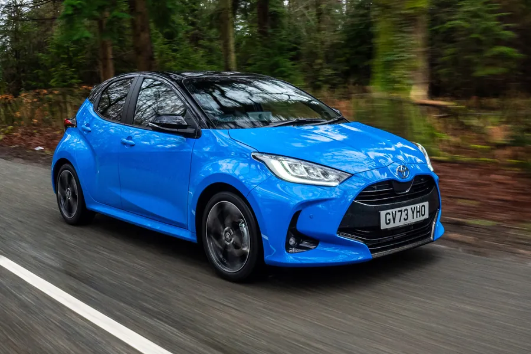
Drive
Toyota Yaris review
Drive
Mazda MX-5 review
Motoring Research
Land Rover Defender: meeting the ancestors
Retro Motor
Land Rover Discovery 1, 2, 3 and 4: Retro Road Test Special
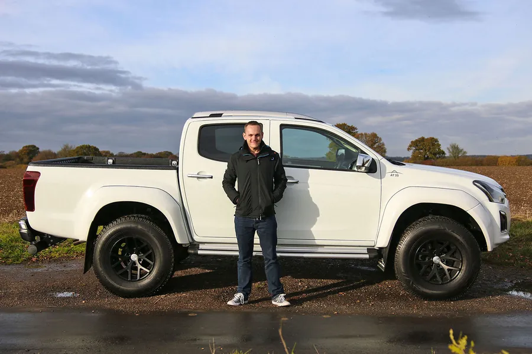
Motoring Research
Opinion: This Arctic Truck is the best thing I’ve driven this year
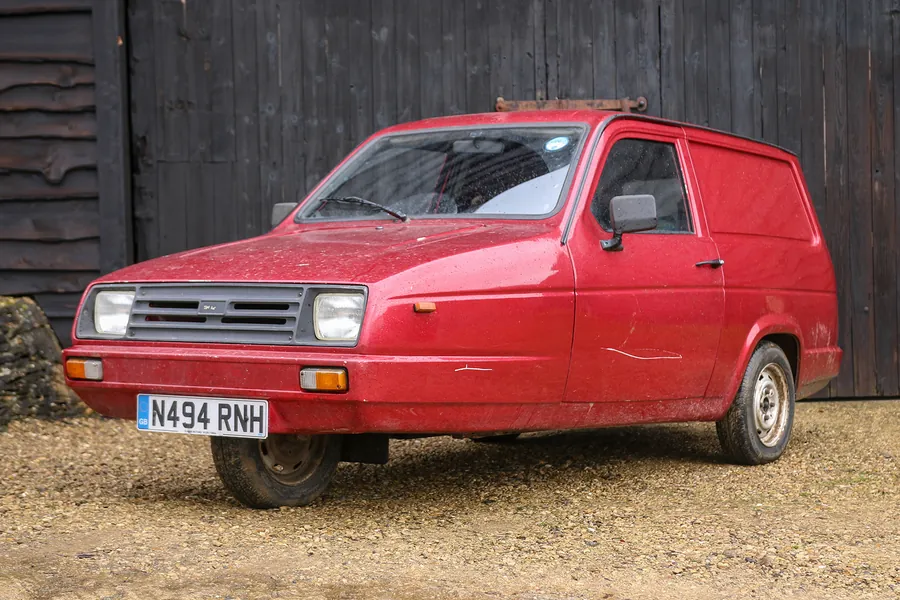
Retro Motor
1995 Reliant Rialto review: Retro Road Test
Retro Motor
2009 Honda S2000 review: Retro Road Test
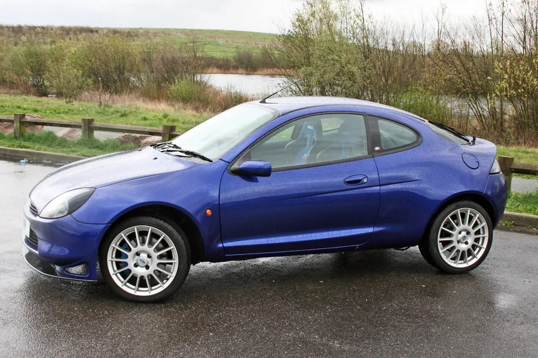
Retro Motor
1999 Ford Racing Puma review: Retro Road Test
Photography
As well as writing, I like to take the photographs. I can provide a full editorial package: words, images, social media – the lot.
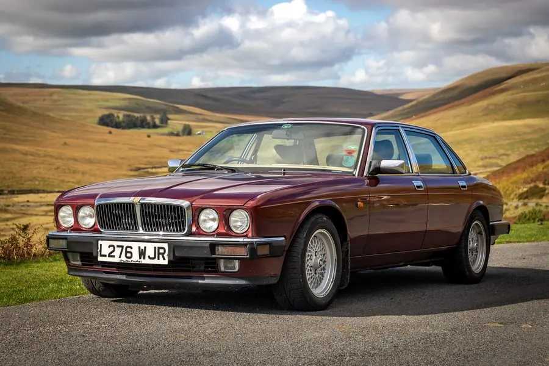
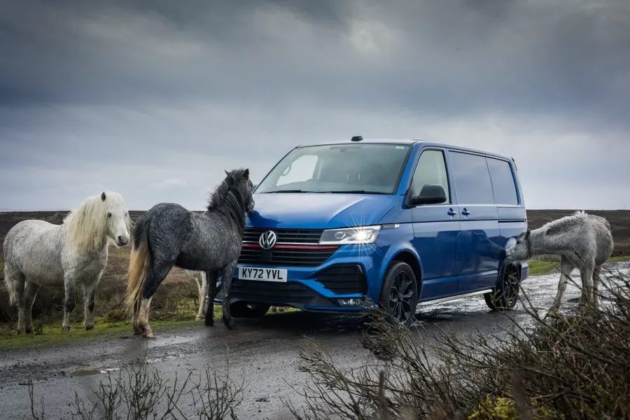
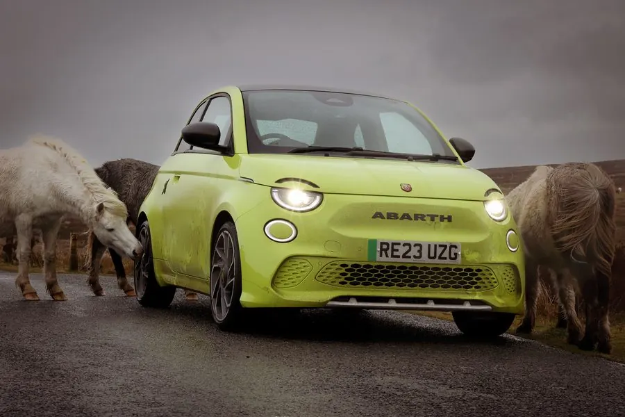
Work with me
I’m here to take on commissions and collaborate with editors, agencies and brands. If you’ve got an idea in mind that you think I could help with, I’d be delighted to chat about it.
Clear, honest, reader-first writing on cars – filed to deadline.
Words for apps, configurators, emails and websites – written in your brand’s tone of voice.
Editorial planning and search-led content that builds organic traffic without a huge budget.
Newsletters and group communications people actually open.
Clear, confident comment on EVs and car buying for broadcast and press.
Copy and photography delivered together as one editorial package.
FAQs
I'm a big fan of electric cars and I’ll happily tell anyone who'll listen that my Hyundai Kona Electric is the best - and most sensible - car I've ever bought. It's incredibly cheap to run, easy to drive and needs less maintenance than anything else I've owned (including a push bike).
They're not for everyone - I wouldn't recommend an EV to anyone who can't charge at home. But given a fair chance, I think a lot of car buyers would be better off with one.
I'm always happy to chat about whether an electric car is right for you - just drop me a message using the form below.
Going in like they're heading into battle.
There's a widespread assumption that the salesperson is the enemy - someone to outsmart, haggle with, keep at arm's length. And yes, there are bad ones out there.
But most salespeople genuinely want to put you in the right car. That's how they build a reputation, get referrals and sleep at night.
It's easier than ever to do your research - know your budget and what you're looking for - but go in with an open mind and a bit of warmth. Build a rapport and you'll find the whole process easier than if you treat them like the enemy.
Buying a car should be exciting. Enjoy it.
On paper, I should say something suitably impressive - maybe the Rolls-Royce Phantom I took to Vienna, or the Ferrari GTC4Lusso that nearly got me arrested in Italy.
But honestly, I like an underdog.
I'm sad that I've never owned a Kia Picanto. Oh, and I love a Mazda MX-5. I've owned one of each generation. They're about as exciting as it gets for me.
I've owned some genuine duffers over the years, but the scariest was an old Porsche Boxster S with 140,000 miles on the clock.
I was going through my “meet the heroes” era and bought a BMW 540i that I just couldn't get excited about. I chucked it on Facebook Marketplace and someone offered their Boxster as a direct swap.
I'd always wanted one so it was a no-brainer. We met at a motorway services on the M6 on a cold December morning and swapped keys - no real inspection, no negotiation, little common sense. It was a way out of a BMW I didn't love.
It was wonderful in some ways, but my local Porsche specialist booked me a quarterly appointment in his diary. Each visit was expensive, and the car rarely lasted a full three months without needing attention. I soon sold it and bought another MX-5.
Commissions, collaborations or a chat? Email andy@ajwb.co.uk or send me a message.